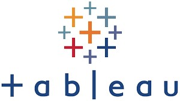

In this project, I thoroughly studied DVDRental.Co LTD's rental performance. I cleaned the data, explored it in detail, and tested various hypotheses by using sql queries. Moreover, I created a smart movie recommendation system. This system used customers' watching history to send personalized emails, making their movie choices more enjoyable.

In this project, we have conducted detailed analysis of a Telecom's churn data using SQL and created an insightful Tableau dashboard. Conducted thorough data cleaning and exploratory analysis, identified key reasons for customer churn,pinpointing high-churn categories and reasons behind customer attrition allowing the development of targeted retention strategies.These insights serve as a guiding compass for resource allocation, strategic marketing, customer retention and ensuring business prosperity.

In this project, we studied how different marketing methods influence customer value over time. We used charts and data analysis to understand customer behavior and channel performance. By identifying the most profitable channels and analyzing customer spending, we can make informed decisions about where to invest our efforts. CLTV(Customer Life Time Value) and ROI(Return On Investment) insights are crucial for businesses to plan effective strategies, allocate resources efficiently, and ensure long-term customer satisfaction.

In these projects, I harnessed Tableau's capabilities to craft visually engaging, interactive dashboards, uncovering profound insights. Across diverse sectors like Churn Data Analysis, Customer's Feedback Data Analysis, Paralympic Data Analysis, and Sales Superstore Data Analysis, I developed multiple dashboards and stories. These projects encapsulate my ability to dissect data complexities, distill them into compelling visual stories, and, most importantly, turn insights into action. Every visualization represents a strategic decision or optimized process. Delve into these narratives by clicking the button below.

In this project, I conducted a comprehensive evaluation of customer ratings and feedback concerning the client's product. I also examined the specific services and products customers had engaged with, as well as the support they received from the organization. This detailed analysis involved the utilization of both Excel and Tableau. By scrutinizing this information, I gained valuable insights into customer preferences and experiences, enabling data-driven decision-making and enhancing the client's overall customer satisfaction strategies.

In this project, I conducted a meticulous analysis of customers' ordering patterns, spending habits, preferred menu items, and visiting frequencies, aligning with the client's core objectives. This profound understanding enables the client to establish a deeper connection with their customers, fostering a personalized dining experience for loyal patrons. These insights hold immense value, empowering the client to make informed decisions, including expansion of their existing customer loyalty program, elevate customer satisfaction and loyalty.

In this project, I conducted ethical web scraping to gather data from wikipedia. I extracted "A list of 100 largest companies by revenue in 2023" including name, industry, revenue, employees and headquarters. Utilizing Python and BeautifulSoup, I processed and analyzed the data, generating valuable insights. This initiative showcased my expertise in transforming unstructured online data into actionable business intelligence,emphasizing ethical practices and contributing to strategic decision-making processes.